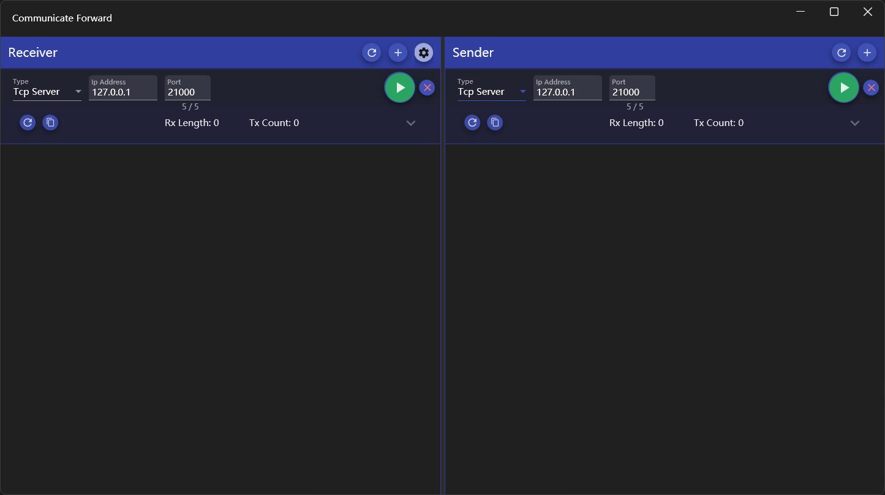
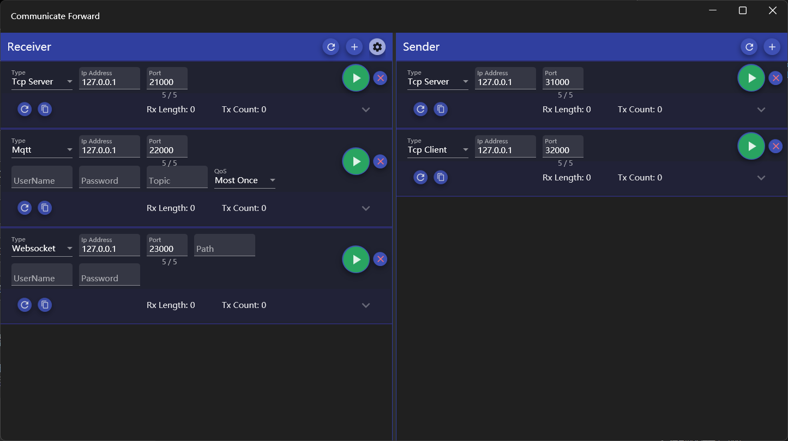
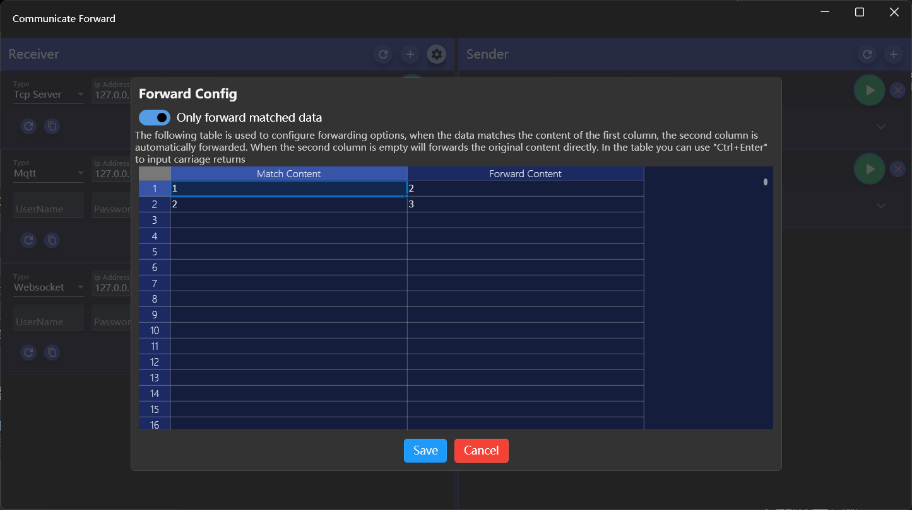
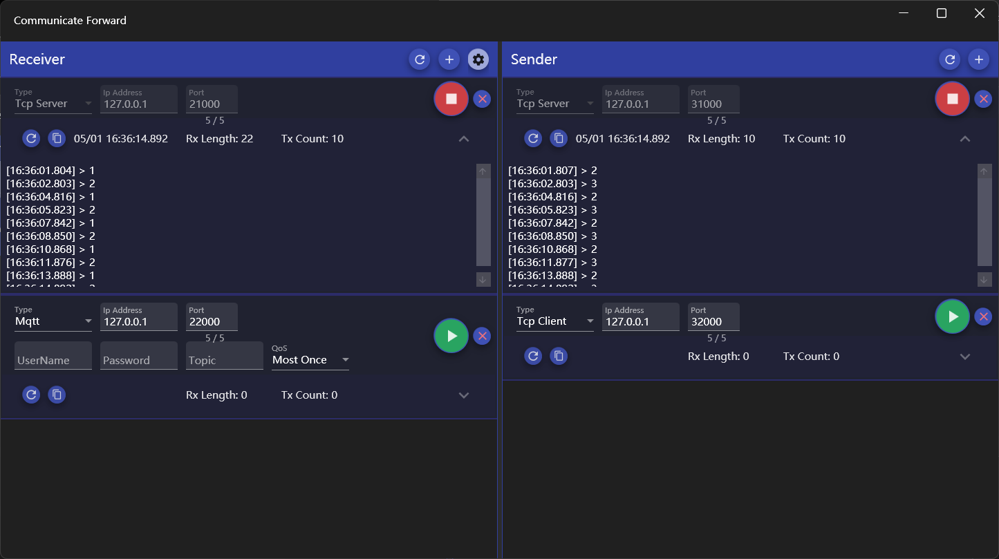

通信转发工具
介绍
数据转发工具，提供数据在Tcp服务器、Tcp客户端、Mqtt和Websocket之间互相转发，支持多对多转发，可以根据自定义映射转发数据。
使用方法
界面分为左右两部分，左侧数据接收端，用于连接数据的来源；右侧数据发送端，用于连接数据发送的目标。
数据转发设置

配置数据接收端
- 应用默认会添加一个接收端，需要增加的话可以点击区域标题栏右侧的【+】按钮进行添加
- 选择接收端连接类型
- 接收端可选连接类型为Tcp Server、Tcp Client、Mqtt和Websocket
- Tcp Server用于接收其他Tcp client发送的数据
- Tcp Client用于接收Tcp Server的数据
- Mqtt可以接收订阅的指定主题的数据
- Websocket可以接收指定Path的数据
- 连接接收端
- 对于Tcp Server，Ip不用修改，保持默认的“127.0.0.1”即可
- 连接Tcp Client需要指定Ip和端口
- 连接Mqtt除了需要指定Ip和端口外，还需要指定主题和Qos，用户名和密码可以根据需要指定
- 连接Websocket除了指定Ip和端口，可以根据需要指定Path、用户名和密码
- 参数设定好之后点击下方【Start】按钮进行连接，成功后按钮会变成【Stop】
- 停止接收端
- 点击【Stop】按钮即可停止
- 删除连接
- 点击连接设置右侧的【x】按钮即可删除
配置数据发送端
- 应用默认会添加一个发送端，需要增加的话可以点击区域标题栏右侧的【+】按钮进行添加
- 选择发送端连接类型
- 发送端可选连接类型为Tcp Server、Tcp Client、Mqtt和Websocket
- Tcp Server可将接收到的数据广播到所有连接到此Server的客户端
- Tcp Client可将接收到的数据发送给其连接的服务器
- Mqtt会以指定主题发送接收的数据
- Websocket会将接收的数据发送到指定Path
- 连接发送端
- 连接方法和接收端一致
- 停止发送端
- 点击【Stop】按钮即可停止
- 删除连接
- 点击连接设置右侧的【x】按钮即可删除
数据转发测试
- 使用工具或设备连接接收端及发送端
- 用接收端连接的工具或设备发送数据
- 发送端连接的工具或设备即可收到数据
如果没有配置映射文件的话，发送的数据是对接收数据的完全复制转发
多个接收端可以同时接收数据，并将数据发送给所有发送端

配置数据映射文件

数据映射文件用于配置接收数据和发送数据的对应关系，供转发时使用
- 点击接收端标题右侧的配置按钮可以打开配置窗口
- 配置窗口上方的开关可以设置转发方式：打开的话将只会发送与第一列匹配的数据，否则会发送所有数据
- 下方表格用于配置数据映射，第一列数据用于和接收数据匹配，如果匹配则发送第二列的对应数据
- 点击【Save】配置保存到文件后关闭窗口，【Cancel】关闭窗口但不保存文件
映射文件第一列的匹配规则是完全相等匹配
第二列数据可以为空，如果为空则会将第一列中的数据直接转发
可以在单元格中使用【Ctrl+回车】输入换行符
第一列数据可以重复，如果匹配到重复数据，则会转发每条匹配到的映射数据
查看数据记录

- 数据转发过程中会在每个连接下方显示数据收发记录，其中会记录每条数据首发时间和内容，点击右侧向下的箭头可以展开和折叠
- 每个连接的状态栏会记录最后收发时间和收发数据的条数和字节数
- 每个连接状态栏左侧的两个按钮的作用分别是：清空记录和复制记录
- 左右区域右侧第一个按钮可以重置该区域所有连接的计数
应用关闭时可以选择退出或者隐藏到任务栏图标，窗口隐藏后可以通过点击任务栏图标显示